무엇을 얻는가
직접 변환이 눌러 버리는 구조를 복원합니다. 같은 20일 창에서 이동평균은 수준만 남기지만, 칼만 필터는 관측 하나를 수준·기울기·혁신·상태 불확실성 네 특성으로 바꿉니다.
트레이딩을 위한 머신러닝 3판
적합 절차의 출력을 시점 기준으로 안전한 특성으로 바꾸기
8장의 특성은 관측을 집계하거나 결정론적으로 변환해 만들었습니다. 이 장의 특성은 먼저 모델을 적합하고 그 출력을 가져옵니다. 얻는 것과 치르는 것이 함께 바뀝니다.
직접 변환이 눌러 버리는 구조를 복원합니다. 같은 20일 창에서 이동평균은 수준만 남기지만, 칼만 필터는 관측 하나를 수준·기울기·혁신·상태 불확실성 네 특성으로 바꿉니다.
같은 적합 객체의 출력이라도 안전한 것과 그렇지 않은 것이 갈립니다. 필터링과 평활, 회고적 단절일과 온라인 경보, 전체 표본 차수 선택과 폴드 내 선택이 그 경계입니다.
불확실성과 국면 확률은 독립 거래 신호가 아니라 다른 특성을 조건짓는 변수입니다. 자산별 시간 출력을 다중 자산 판단에 쓸 때는 작업 순서가 결과를 바꿉니다.
특성이 추정 절차의 출력이면, 그 절차의 모수·차수·창 길이를 언제 어떤 데이터로 골랐는지가 모두 누출 경로가 됩니다. 평가 코드에는 보이지 않는 종류의 누출입니다.
장은 경제적 계열이 아니라 추출 방법을 기준으로 구성됩니다. 적합 절차 하나가 여러 종류의 특성을 한꺼번에 낳기 때문입니다.
계열의 성질이 지금 얼마나 안정적인가, 그리고 롤링 통계가 눌러 버린 구조는 무엇인가. 롤링 정상성 통계량·단절 특성·분수 차분에서 시작해 잠재 상태·주파수·스케일·경로 기하로 넘어갑니다.
조건부 동학에서 무엇을 꺼낼 수 있는가, 그리고 그 추정을 얼마나 믿는지를 어떻게 전달하는가. 조건부 분산과 지속성·비대칭 모수에 이어 구간 너비와 사후 산포를 다룹니다.
반복해서 돌아오는 환경을 확률로 표현하고, 자산별 시간 출력을 시장 안의 상대 위치로 바꿉니다. 마지막은 이 많은 특성을 작고 비중복인 집합으로 관리하는 문제입니다.
일곱 절이 각자의 도구에 대해 같은 시점 기준 질문을 반복합니다. 도구가 달라도 게이트는 하나입니다.
출력이 한 번 추정되고 느리게 바뀌는 수량인지, 관측마다 갱신되는 수량인지에 따라 운용 방식이 달라집니다.
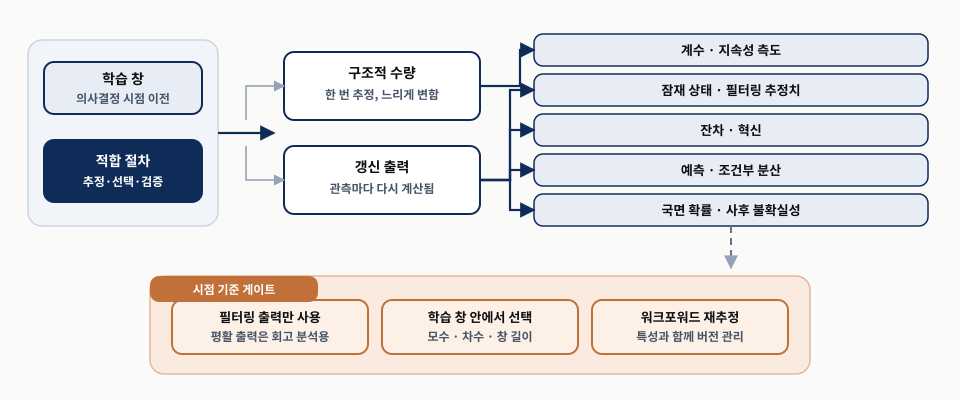
왼쪽의 학습 창에서 시작해 가운데 두 갈래로 나뉘는 지점을 먼저 봅니다. 구조적 수량은 계수와 지속성 측도처럼 한 번 추정하면 느리게 바뀌고, 갱신 출력은 잠재 상태·혁신·조건부 분산·국면 확률처럼 관측마다 다시 계산됩니다. 오른쪽 다섯 칩이 그 결과이고, 아래쪽 게이트의 세 조건은 장 전체에서 반복됩니다. 조건 하나만 어겨도 그 특성은 백테스트에서만 작동합니다.
특성의 종류가 달라도 통과해야 하는 조건은 같습니다. 필터링 출력만 쓰고, 학습 창 안에서 고르고, 워크포워드 안에서 재추정합니다.
예측 모델을 적합하기 전에 하는 진단은 전처리의 문지기로만 쓰이는 경우가 많습니다. 이 절은 같은 진단이 특성 생성기이기도 하다고 말합니다.
롤링 정상성 통계량은 국면 지표가 되고, 탐지된 단절일은 조건화 변수가 되며, 지속성 추정치는 충격이 얼마나 빨리 사라지는지를 요약합니다.
실무 워크플로는 작은 시각 진단 집합에서 출발합니다. 계열 그림, 자기상관 그림, 분포 그림 셋입니다.
현재 값이 여러 시차 길이의 과거 값과 얼마나 강하게 함께 움직이는지를 보입니다. 중간 시차를 거쳐 전달된 의존까지 합친 총 선형 기억입니다.
더 짧은 시차를 모두 통제한 뒤 시차 k가 여전히 무언가를 더하는지만 잽니다. 그래서 AR(1)은 PACF 첫 시차만 튀고 MA(1)은 그 반대입니다.
경험 분포를 정규분포와 비교해 왜도·두꺼운 꼬리·이상치를 드러냅니다. 세 그림은 정상성을 증명하지 않고 어떤 검정을 돌릴 가치가 있는지를 가리킵니다.
수익률 ACF가 평평한데 제곱 수익률 ACF가 남으면 구조가 평균이 아니라 분산에 있습니다. 이 구분이 9.3절 변동성 특성의 출발점입니다.
S&P 500 자료에 대한 첫 진단입니다. 각 칸의 수치는 원서가 보고한 값입니다.
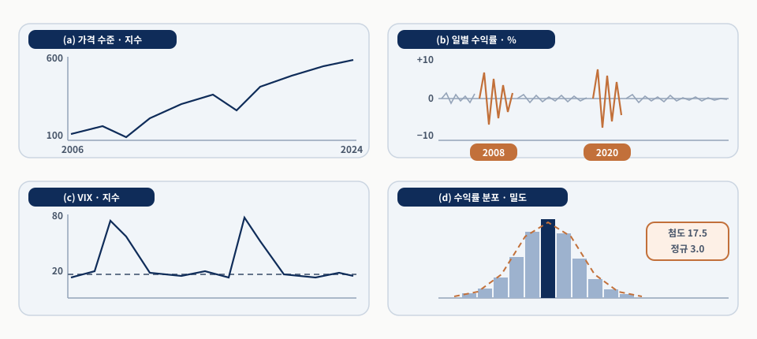
(a) 가격 수준 → (b) 일별 수익률 → (c) VIX → (d) 수익률 분포 순으로 보고, 각 칸이 던지는 질문을 따로 받아 적습니다.
(a) 100에서 600 근처로 추세. (b) 2008·2020년에 ±10% 안팎 군집. (c) 80까지 급등 후 기준선 20 복귀. (d) 표본 첨도 17.5 대 정규 3.0.
(c)의 VIX는 표류하는 가격 계열이 아니라 지속적이면서 평균회귀하는 상태 변수처럼 행동합니다. 가격과 같은 처방을 적용할 대상이 아닙니다.
네 칸이 함께 던지는 질문은 셋입니다. 계열이 정상적인가, 국면이 바뀌었는가, 비정상이라면 가장 덜 파괴적인 변환은 무엇인가.
두 검정은 서로 반대 방향의 귀무가설에서 출발합니다. ADF는 단위근을, KPSS는 정상성을 귀무가설로 둡니다.
| ADF | KPSS | 읽는 법 |
|---|---|---|
| 단위근 기각 | 정상성 기각 안 함 | 선택한 명세 아래에서 증거가 정상성을 지지합니다 |
| 기각 안 함 | 기각 | 증거가 비정상성을 지지합니다 |
| 기각 | 기각 | 두 검정이 충돌합니다. 결정론적 추세·구조적 단절·비선형 평균회귀·변하는 변동성 가운데 어느 검정도 깔끔히 잡지 못하는 불안정성이 있을 수 있습니다 |
| 기각 안 함 | 기각 안 함 | 결론 없음으로 보는 편이 낫습니다. 창이 짧거나 과정이 매우 지속적이거나 검정력이 낮은 경우가 많습니다 |
p-값은 귀무가설과 검정 가정이 맞을 때 관측치 이상으로 극단적인 통계량이 나올 꼬리 확률입니다. 귀무가설이 참일 확률도, 경제적 중요성의 증명도 아닙니다.
두 검정이 어긋나는 이유는 대개 유한 표본의 모호함입니다. 상수·추세·시차 명세를 먼저 정하고 결합 판정과 함께 기록합니다.
특성 공학에서는 최종 판정만큼 검정 출력 자체가 중요합니다. 두 통계량과 p-값은 롤링 창에서 추적할 수 있습니다.
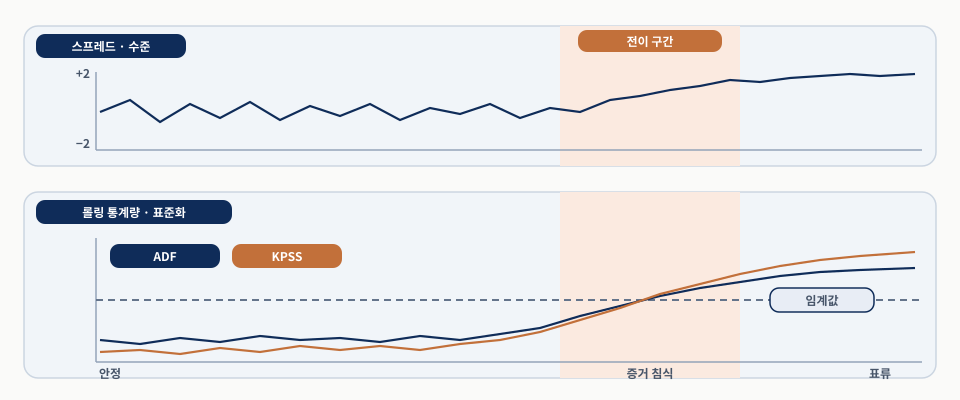
위 칸에서 표류가 시작되는 지점을 찾고, 아래 칸에서 두 통계량이 그 지점 전후로 어떻게 움직이는지 봅니다.
안정 구간에서는 ADF가 임계값 아래, KPSS가 낮게 머물다가 표류가 시작되면 ADF 증거가 약해지고 KPSS가 오릅니다. 두 선이 언제 교차하는지가 아니라 얼마나 넓은 구간에 걸쳐 바뀌는지가 요점입니다.
선의 모양은 Primer가 서술한 패턴을 보이는 모식도이며 특정 자산의 측정 결과가 아닙니다. 롤링 p-값이 5%를 넘는 순간을 국면 경계로 읽지 않습니다.
특성은 “정상 대 비정상”이라는 두 값이 아니라, 의사결정 시점에 기저 과정이 얼마나 안정적으로 보이는지를 나타내는 시간 가변 측도입니다.
계열이 정상성 검정에 실패하는 이유는 하나가 아닙니다. 계속 표류할 수도 있고, 안정적이다가 국면 변화로 끊길 수도 있습니다.
Zivot-Andrews 검정은 단위근 틀을 확장해 데이터에서 단절 하나를 내생적으로 고릅니다. 표본이 길면 여러 후보 단절일을 찾는 Bai-Perron 분할이 더 현실적입니다. 두 방법 모두 단절 양쪽 자료를 씁니다.
CUSUM 통계량은 목표 수준에서의 편차를 누적하다가 지속적 표류가 무시하기 어려울 만큼 커지면 경보를 냅니다. 보완적으로 위치·척도·의존·분포 형태의 여러 약한 신호를 분류기가 집계하게 할 수도 있습니다.
출력이 특성이 됩니다. 단절일, 마지막 단절 이후 경과 시간, 단절 전후 평균, CUSUM 통계량, 분류기 확률 모두 조건화 정보가 됩니다.
이 절에서 가장 흔한 누출이 여기 숨어 있습니다. 회고적 단절일은 실제 변화에 가까울 수 있지만 바로 그 이유로 실시간 안전이 아닙니다.
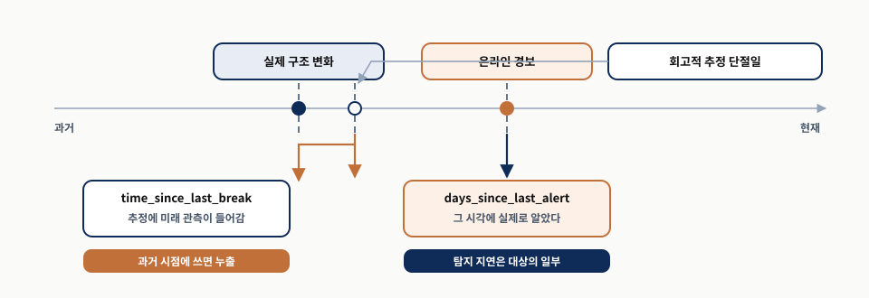
세 눈금의 순서를 먼저 확인하고, 그다음 각 눈금에서 아래로 내려가는 화살표가 어떤 특성 이름에 닿는지 봅니다.
CUSUM이 경계를 넘는 시각은 탐지 시각이지 단절 시각이 아닙니다. 탐지 지연은 결함이 아니라 대상의 일부입니다. 그래서 time_since_last_break와 days_since_last_alert는 바꿔 쓸 수 없습니다.
3월의 변화가 4월에 탐지됐다면 3월의 과거 특성에 이미 단절을 안 것처럼 표시할 수 없습니다. 단절 점수는 경제적 원인도, 새 국면의 영속성도 말하지 않습니다.
순수한 분산 변화에는 제곱 CUSUM 같은 분산 지향 절차가 따로 필요하고, 변동성이 서서히 변할 때는 단절일 자체가 시간에 걸쳐 번집니다.
보통의 1차 차분은 효과적이지만 필요한 저주파 성분까지 한 번에 제거할 수 있습니다. 분수 차분은 그 연산자를 일반화합니다.
변환된 계열의 한 시점 값입니다. 현재 관측에 가중치 1을 주고 과거 관측에는 ω(k)를 곱해 모두 더합니다. L은 한 기간 시차 연산자, d는 차분 차수, k는 시차입니다.
d=0.4에서 처음 네 가중치는 1, −0.4, −0.12, −0.064입니다. 시차 0의 양의 가중치 뒤로 크기가 서서히 줄어드는 음의 꼬리가 이어지고 부호는 교대하지 않습니다.
d=0이면 가중치가 (1, 0, 0, …)인 항등 필터이고, d=1이면 (1, −1, 0, …)의 보통 차분이어서 두 항만 필요합니다. 변환된 계열은 그 사이 연속체 위의 정확한 한 점입니다.
정상적인 장기 기억 사례(보통 0 < d < 0.5)에서는 자기상관이 ARMA의 지수적 속도가 아니라 쌍곡선적으로 감소합니다.
실무에서 분수 차분은 무한 가중치열이 아니라 유한한 룩백으로 구현됩니다. 절단 임계값 너머의 가중치는 버립니다.
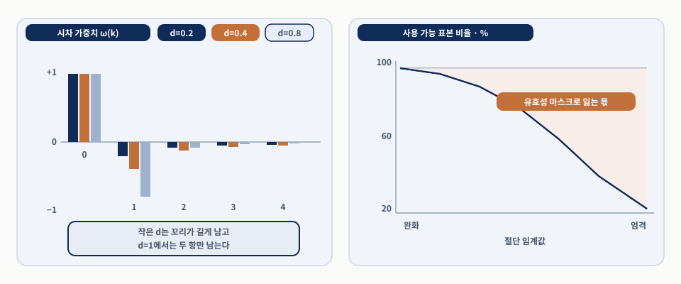
왼쪽에서 꼬리의 길이를 보고, 오른쪽에서 그 꼬리를 근사하는 데 드는 표본 비용을 봅니다.
전체 창 구현은 룩백이 쌓일 때까지 첫 관측들을 사용 불가로 처리해 워밍업 기간과 유효성 마스크를 만듭니다. 경계 부분 구현은 행 수를 보존하되 초기 관측을 짧은 유효 필터로 만듭니다.
어느 관례든 정당화할 수 있지만 선택은 특성 정의의 일부입니다. 같은 d를 고른 두 사람도 절단 허용치가 다르면 서로 다른 특성을 갖습니다.
다운스트림 모델은 어느 관측이 부분 필터에 의존하는지, 전체 창 관례였다면 몇 개의 관측을 잃었을지를 알아야 합니다.
목표는 전체 표본의 전역 최적값이 아니라, 받아들일 만한 정상성 진단을 내면서 기억은 최대한 보존하는 가장 작은 d입니다.
학습 창에서 유계 격자의 d 값들을 평가하고, 변환된 각 계열에 ADF 통계량 같은 정상성 진단을 계산하고, 원계열과의 상관이 얼마나 남았는지 평가합니다.
워크포워드는 배포 시뮬레이터입니다. 각 결정일에 그때까지 알던 것으로 학습하고 다음 미관측 블록을 예측합니다. 한 시뮬레이션 예에서 k-겹의 결정계수는 약 0.19(표준편차 0.07), 워크포워드는 약 0.12(표준편차 0.19)였습니다. 평균이 아니라 표준편차가 요점입니다.
스케일러나 주성분분석을 전체 표본에 적합해 두고 나누는 것과 똑같이, 분수 차분의 d와 절단 규칙도 각 학습 블록 안에서 적합해야 합니다. 뒤에 나올 ARIMA 차수와 칼만 잡음 공분산도 같습니다.
k-겹은 국면 전환을 촘촘한 분포 뒤에 숨기고, 워크포워드는 어떤 폴드가 무너지는지를 드러냅니다. 수치는 그 예의 설정에 한정됩니다.
롤링 통계는 창 안에서 일어난 일을 요약하지만, 예측에 중요할 수 있는 구조의 상당 부분을 눌러 버립니다.
이동평균은 평균 수준을, 롤링 변동성은 산포를 잡습니다. 어느 쪽도 경로가 매끄러웠는지, 요동이 창의 어디에서 일어났는지, 잡음 아래에 주기가 있었는지는 말해 주지 않습니다.
각각 복원하려는 숨은 구조의 종류가 다르고, 따라서 답하는 질문도 다릅니다.
| 변환 | 복원하는 구조 | 답하는 질문 |
|---|---|---|
| 칼만 필터 | 잡음 섞인 관측 아래의 숨은 상태 | 지금 수준과 추세는 무엇이고, 오늘 관측은 얼마나 놀라운가 |
| 스펙트럼 방법 | 변동이 주파수에 어떻게 분포하는가 | 어떤 주기가 얼마나 강한가 |
| 웨이블릿 | 서로 다른 스케일의 성분 | 어느 시간 스케일이 언제 움직였는가 |
| 경로 시그니처 | 끝점이나 모멘트가 아닌 경로의 순서 기하 | 같은 곳에 도착한 두 경로는 어떻게 달랐는가 |
목표는 원시 순차 데이터를 단순한 롤링 통계보다 정보성이 높을 수 있는 요약으로 바꾸는 것입니다.
단순 이동평균은 해석하기 쉽지만 경직돼 있습니다. 강한 추세에서는 너무 느리게, 잡음 많은 횡보장에서는 너무 빨리 반응할 수 있습니다.
관측 계열은 가격·수익률·스프레드 같은 시장 변수입니다. 잠재 상태는 그 관측을 만들어 냈다고 믿는 더 매끄럽거나 더 지속적인 대상, 이를테면 기저 수준과 추세입니다.
예측 단계에서 모델의 전이 규칙으로 상태를 앞으로 투영하고, 갱신 단계에서 새 관측으로 그 투영을 수정합니다. 국소 선형 추세 모델에서는 상태가 수준과 기울기를 함께 담습니다.
자동차 내비게이션이 GPS와 속도계를 합치는 일과 같습니다. 다만 내비게이션이 상황을 보고 스스로 신중해지는 것이 아니라, 미리 넣어 둔 오차 가정이 기울이는 비중을 정해 둡니다.
원서는 관측이 요동칠 때 필터가 더 조심스러워진다고 적습니다. 잡음 모수를 고정한 필터는 스스로 조심해지지 않고, 혁신이 커지면 같은 이득에서 갱신량만 커집니다.
원래 항법과 제어를 위해 개발된(Kalman, 1960) 모델이고, 두 식이 각각 전이와 측정을 담당합니다.
x는 숨은 상태 벡터(국소 선형 추세에서는 수준과 기울기), y는 관측값, F는 상태가 진화하는 방식을 정하는 전이 행렬, H는 상태를 관측 척도로 사상하는 측정 행렬, w와 v는 각각 과정 잡음과 관측 잡음입니다.
칼만 수준은 적응형 추세 기준점, 칼만 추세는 고정 룩백 없는 모멘텀, 혁신은 필터가 기대한 값과 실제 관측의 차이인 놀라움 변수, 상태 불확실성은 필터가 자기 추정을 얼마나 확신하는지입니다.
같은 논리가 동적 헤지 비율로 확장됩니다. 계수를 고정 상수가 아니라 시간에 따라 진화하는 값으로 두는 것이고, 9.6절의 쌍별 특성에서 다시 나옵니다.
이 출력들은 이동평균 교차보다 많은 정보를 담습니다. 모든 것을 선 하나로 뭉개지 않고 방향·놀라움·확신을 구별하기 때문입니다.
어제의 필터링 수준 100, 사후 분산 1.2, 과정 분산 0.3, 오늘 관측 101.8, 관측 잡음 분산 2.5로 한 걸음을 따라갑니다.
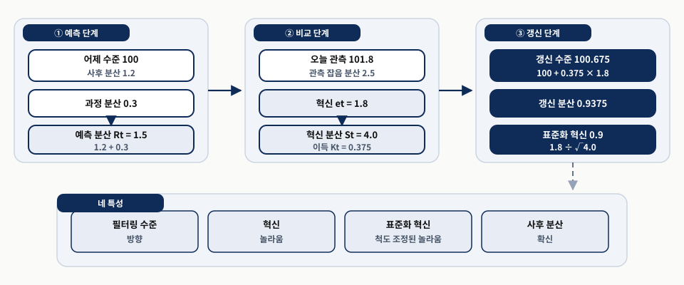
왼쪽에서 오른쪽으로 한 걸음만 따라가고, 마지막에 아래쪽 네 칩이 어느 계산에서 왔는지 확인합니다.
이득은 예측 공분산과 가정한 잡음 공분산으로 정해집니다. 과정 잡음을 크게 두면 상태가 빨리 적응하고 관측 잡음을 크게 두면 새 관측을 덜 믿어 더 평활해집니다.
잡음 모수 선택이 특성의 의미 자체를 바꾸므로 학습 창에서 정해 검증 구간 동안 고정합니다. 작은 사후 분산은 모델 가정 안의 확신이지 경제적 참이 아닙니다.
숫자가 아니라 갈라짐이 요점입니다. 관측 하나가 필터링 수준·혁신·표준화 혁신·사후 불확실성이라는 네 특성이 됩니다.
etfs 사례 연구에서 일별 수익률에 국소 선형 추세 칼만 필터를 적용한 결과입니다. 정보 계수는 특성과 선행 수익률의 상관입니다.
SPY에서 칼만 기울기는 5일 선행 수익률에 대해 −0.16의 정보 계수를 달성했고, 20일 롤링 OLS 기울기는 −0.02였습니다. 둘 다 음수이므로 단기 평균회귀와 일관되지만, 요점은 부호가 아니라 크기 차이입니다.
정보 계수는 예측 정확도 계열의 지표이며 수익률도, 비용 차감 후 성과도 아닙니다. 이 값만으로는 거래 가능성을 알 수 없고, 회전율과 거래비용을 거치면 유의한 상관도 쓸모없어질 수 있습니다.
혁신 특성은 실적 시즌과 거시 발표 전후에 높은 값을 보입니다. 필터의 매끄러운 모델이 거듭 놀라는 시기이며, 다른 신호의 선별을 조건화할 수 있습니다.
2018년부터 2024년까지의 SPY입니다. 각 칸의 임계 수치는 원서가 보고한 값입니다.
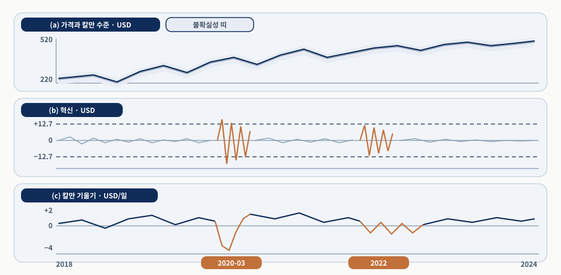
세 칸을 세로로 겹쳐 같은 날짜를 따라 읽습니다.
(a)에서 두 선이 거의 붙어 있다는 것이 곧 (b)의 혁신이 작다는 뜻이고, (b)의 군집 시기가 (c)의 기울기가 급변하는 시기와 겹칩니다.
기울기 단위는 달러/일이므로 자산 가격 수준이 다르면 직접 비교할 수 없습니다. 혁신 임계 12.7도 같은 척도의 값입니다.
하나의 적합 객체가 세 종류의 정보를 따로 내놓습니다. 평활한 선 하나로 뭉개면 이 구분이 사라집니다.
입력은 공식 번들 AAPL 일별 종가의 로그값입니다. 앞 80관측으로 관측 잡음 분산 R을 정하고 과정 분산은 Q = 0.1R로 미리 고정합니다. 최적 모형을 탐색하지 않는 교육용 비율입니다.
log_price9 = np.log(load_reference_prices(BOOK_ROOT)["AAPL"])
train9, observations9 = log_price9.iloc[:80], log_price9.iloc[80:]
R9 = max(float(train9.diff().dropna().var()), 1e-8)
Q9 = .1 * R9 # 사전 고정한 교육용 비율
cutoff9 = log_price9.index[160]
changed9 = observations9.copy()
changed9.loc[changed9.index > cutoff9] += .15 # 이후 구간만 바꾼 가상 경로
filtered9 = local_level_filter9(observations9, Q9, R9, float(train9.iloc[-1]))
filtered_changed9 = local_level_filter9(changed9, Q9, R9, float(train9.iloc[-1]))
smoothed9 = retrospective_smoother9(filtered9, Q9)
smoothed_changed9 = retrospective_smoother9(filtered_changed9, Q9)
past9 = observations9.index <= cutoff9 # 기준일 이전 구간만 비교
filtered_difference9 = (filtered9.filtered_state - filtered_changed9.filtered_state).loc[past9].abs().max()
smoothed_difference9 = (smoothed9 - smoothed_changed9).loc[past9].abs().max()마지막 두 줄이 이 실험의 전부입니다. 기준일 이후만 바꾼 뒤 기준일 이전 구간에서 두 출력의 차이를 절대값 최대로 잽니다. 상태 출력은 80관측 뒤에만 만들고, 적합 종료일이 온라인 시작일보다 앞서는지를 실행 중 assertion이 확인합니다.
다음 화면에서 두 숫자를 비교합니다. 필터와 평활 가운데 어느 쪽의 과거가 미래에 반응했는지가 곧 특성 사용 가능성입니다.
앞 화면과 같은 데이터·기간·고정 모수입니다. 조건은 fit_end=2021-04-28, online_start=2021-04-29, Q=0.00003755, R=0.00037554입니다.
| 출력 | 과거 구간 최대 절대 변화 (로그가격) | 온라인 입력으로 허용 |
|---|---|---|
| 필터 (filter) | 0.000000 | True |
| 평활 (smoother) | 0.063287 | False |
평활은 설계상 미래 관측을 쓰기 때문입니다. 같은 실행이 기록한 두 자동 검사는 적합 종료일과 온라인 시작일이 겹치지 않는다는 것, 그리고 모든 상태값이 유한하다는 것입니다.
성과 비교가 아닙니다. AAPL 2021년 고정 표본의 교육용 실험이며, Q와 R을 미리 고정했으므로 상태 공분산이 실제 충격 크기에 반응하지 않습니다.
앞 표와 같은 실행이 함께 남긴 그림입니다. 축 단위는 로그가격입니다.
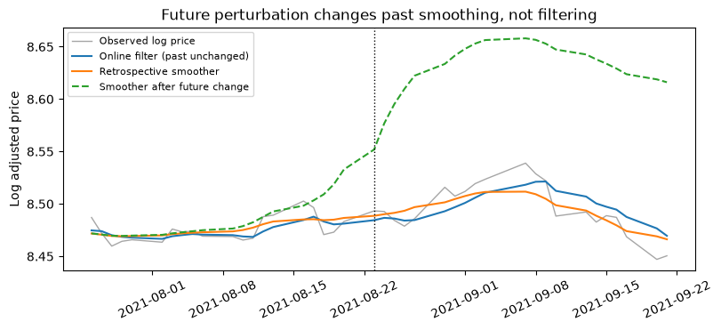
관측선을 기준으로 두 상태선의 꺾이는 타이밍을 비교합니다.
필터는 관측을 본 뒤에만 움직이고, 평활은 뒤로 가는 패스에서 미래 관측을 쓰므로 변화 지점보다 앞서 꺾입니다.
필터를 썼다는 사실만으로 안전해지지 않습니다. Q·R·초기 상태를 전체 표본으로 골랐다면 과거 방향으로 실행한 필터도 누출입니다.
이 경계는 9.4절의 사후 불확실성과 9.5절의 국면 확률에서 같은 형태로 다시 나타납니다.
주파수는 단위 시간당 반복 횟수이고 그 역수가 주기입니다. 일별 데이터의 주간 주기는 주기 5, 주파수 1/5입니다.
k번째 주파수 성분의 계수입니다. N은 계열 길이, x는 관측, k는 주파수 인덱스이고 지수항은 k번째 이산 진동입니다. 따라서 X는 계열이 그 진동과 얼마나 잘 맞아떨어지는지를 잽니다.
날짜 하나씩을 골라내는 표준 기저 대신 주기를 골라내는 진동 기저로 같은 벡터를 다시 쓰는 것이며, 역변환이 원계열을 그대로 복원합니다. 주기도표의 봉우리 주파수 f는 주기 1/f에 해당합니다.
에일리어싱은 나이퀴스트 한계를 넘는 진동이 낮은 주파수로 접히는 것, 스펙트럼 누설은 창 안에 사이클이 정수 개가 아닐 때 에너지가 이웃 빈으로 새는 것, 국면 평균은 지배 주파수가 국면마다 바뀔 때 전체 표본 스펙트럼이 평균이 되는 것입니다.
봉우리는 표본이 그 정현파와 강하게 정렬됐다는 뜻일 뿐입니다. 일시적 사건·국면 전환·표본화 인공물도 같은 봉우리를 만듭니다.
시점 t에서 변환은 전체 표본이 아니라 후행 창만 써야 합니다. 아주 짧은 창에서는 분기 주기를 분해할 수 없습니다.
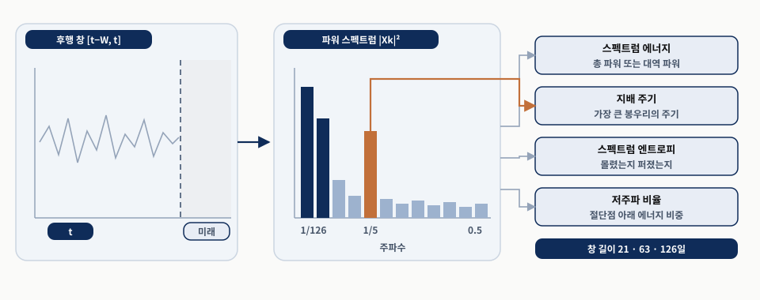
왼쪽에서 가운데로, 가운데에서 오른쪽으로 읽고 네 연결선이 각 특성이 스펙트럼의 어느 부분을 읽는지 가리킵니다.
스펙트럼 에너지는 총 또는 대역 파워, 지배 주기는 가장 큰 봉우리에 대응하는 주기, 스펙트럼 엔트로피는 파워가 몰렸는지 퍼졌는지, 저주파 비율은 절단점 아래 에너지의 비중입니다.
달력 인코딩은 알려진 주기를 부과하고, 스펙트럼 특성은 그 주기가 실제로 있는지와 세기가 변하는지를 묻습니다. 여러 창 길이(21·63·126일)가 서로 다른 주기를 잡습니다.
주기 구조 자체가 시간에 따라 변할 때 8장의 결정론적 달력 특성과 이 특성의 구분이 중요해집니다.
푸리에는 어떤 주파수가 있는지는 알려 주지만 그 주파수가 언제 활동했는지는 훨씬 덜 알려 줍니다. 웨이블릿은 스케일과 타이밍을 함께 보존합니다.
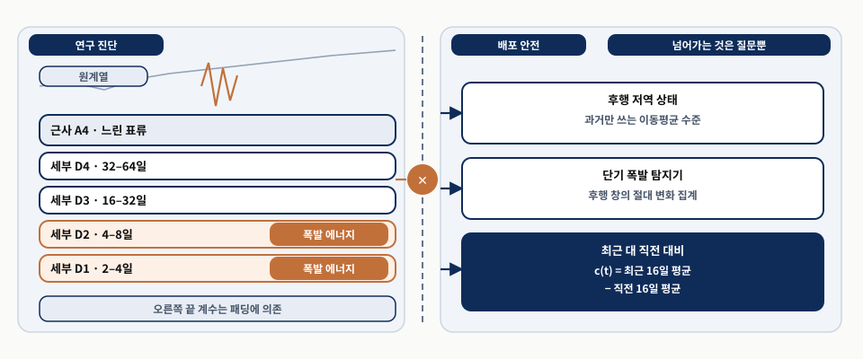
왼쪽에서 구조가 어느 기간에 사는지를 읽고 가운데 경계에서 멈춥니다. 오른쪽으로 넘어가는 것은 계수가 아니라 질문입니다.
웨이블릿 계수는 그 시점 주변 이웃에 의존하고, 표본 가장자리에서는 필터 지지가 모자라 패딩이 개입하므로 오른쪽 끝 계수가 실시간에 없었을 정보를 쓸 수 있습니다.
연구에서 기간을 찾고, 평가 전에 “16–32일 스케일” 같은 대응을 고정하고, 계수를 지지 구간이 전부 과거인 후행 대리값으로 바꾸고, 폴드마다 다시 계산합니다.
16일 대비의 예는 최근 16일 평균에서 직전 16일 평균을 뺀 값입니다. 웨이블릿 계수가 아니라 같은 질문을 감사 가능하게 묻는 특성입니다.
두 창이 시작·끝·실현 변동성이 같으면서도 거기까지 가는 길이 크게 다를 수 있습니다. 전통적 시차 특성은 창을 끝점과 산포로 압축해 이 둘을 비슷하게 취급합니다.
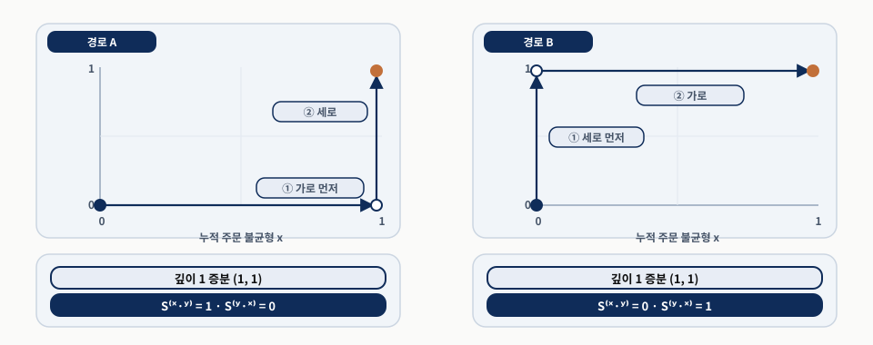
두 경로의 끝점이 같다는 것을 먼저 확인하고, 그다음 아래쪽 두 값의 자리가 바뀐 것을 봅니다.
두 좌표를 누적 수익률과 누적 주문 불균형으로 읽으면 “불균형이 먼저 움직이고 가격이 따랐다”와 그 반대가 끝값이 같아도 구별됩니다.
경로 하나의 시그니처는 총 증분의 지수급수로 무너져 창 안의 순서 바꿈을 복원할 수 없습니다. 그래서 단조 증가하는 시간 좌표를 붙이거나 선후행 임베딩을 씁니다.
전체 시그니처의 좌표 수는 채널 3·깊이 3이면 상수항 포함 40개로 자랍니다. 대수적 중복을 걷어 낸 깊이 2 로그 시그니처가 합리적인 출발점입니다.
8장의 실현 변동성과 범위 기반 추정량은 가격 변동을 효율적으로 요약하지만 어디까지나 후향 요약입니다.
이 절은 적합된 변동성 모델로 넘어갑니다. 목표는 8장을 대체하는 것이 아니라 변동성이 어떻게 진화하는지를 모델링하고 그 동학에서 시점 기준으로 안전한 요약을 뽑는 것입니다.
적합된 변동성 모델은 직접 집계가 주지 못하는 세 종류의 정보를 줍니다. 조건부 추정치, 기간별 기여의 분리, 그리고 지속성·비대칭 모수입니다.
창 안 수익률의 표본 표준편차로, 지난 창에서 수익률이 얼마나 퍼졌는지의 후향 요약입니다.
옵션 가격을 재현하는 변동성 입력입니다. VIX는 향후 30일 기대 분산의 위험중립 추정치를 연율 단위로 인용한 지수입니다. Marra (2023)는 내재 표준편차가 표본의 약 84% 달에서 이후 실현 변동성을 과대평가했다고 기록합니다.
정보 집합이 주어졌을 때의 예측 분산입니다. GARCH 재귀는 추정량이 아니라 분산이 진화하는 방식의 모델입니다.
연율화에 쓰는 시간의 제곱근 규칙은 한 기간 분산이 같고 시차 공분산이 0이면 정확히 성립하고(독립은 충분조건), 그렇지 않으면 근사에 그칩니다.
주된 용도는 변동성 모델링 전에 단순 선형 구조를 걷어 내거나, 일별 수익률보다 예측 가능한 보조 계열에 적합 특성을 만드는 것입니다.
AR은 현재가 자기 과거에 의존하는 구조로 양의 계수는 지속성, 음의 계수는 평균회귀를 뜻합니다. MA는 롤링 창 평균이 아니라 최근 혁신들의 가중합입니다. I는 차분 뒤에 ARMA를 놓는다는 뜻이고, 차분 방정식의 상수항이 0이 아니면 수준의 결정론적 추세를 뜻합니다.
잔차는 모델의 기대 경로에서 벗어난 정도를, 한 걸음 예측은 다음 기간 수준의 모델 기반 추정치를 줍니다. 정상 입력에는 저차 모델이 보통 충분하고, 차수 탐색은 워크포워드 학습 창마다 반복해야 합니다. 그렇지 않으면 시차 구조 자체가 뒤 데이터를 알고 선택된 것입니다.
짧은 기간에서는 매수–매도 반동이 MA 구조처럼 잡힙니다. 잔차로 걷어 내는 것은 옳지만 그 “평균회귀”를 신호로 착각하면 안 됩니다.
Engle (1982)이 ARCH 경우를 도입하고 Bollerslev (1986)가 일반화했습니다. 특성 공학에서는 예측 도구보다 변동성 동학의 구조화된 분해로서 중요합니다.
σ²는 조건부 분산, ε는 혁신(평균 제거 후 수익률), ω는 분산의 바닥 수준, α는 어제 충격의 크기가 오늘 분산을 얼마나 키우는지, β는 어제 분산이 오늘로 얼마나 이월되는지입니다. 단위는 수익률 제곱이므로 표준편차로 보려면 제곱근을 취합니다.
적합된 조건부 표준편차를 cond_vol로 저장하고, α는 shock_impact, β는 vol_persistence가 됩니다. 두 합은 변동성 충격이 얼마나 느리게 사라지는지를 잡습니다.
정상 GARCH에서 충격의 근사 반감기는 log(0.5)/log(α+β)입니다. SPY 적합은 α≈0.17, β≈0.80이므로 합 0.97이고 함의된 반감기는 약 23거래일, 곧 한 달 남짓입니다.
이것이 평균 수익률 모델은 그렇지 못할 때에도 변동성 모델이 유용한 특성을 자주 내놓는 이유입니다. 변동성은 군집하고 그 군집은 간결하게 요약됩니다.
모델은 장기 분산 수준도 함의합니다. 분모가 1에서 두 계수의 합을 뺀 값이므로 그 합이 제약입니다.
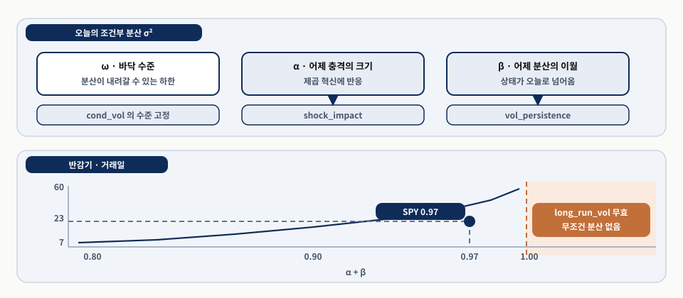
위에서 세 항이 어떤 특성 이름으로 나가는지 읽고, 아래 축에서 지속성 합의 위치를 확인합니다.
합이 정확히 1인 경우는 적분 GARCH의 경계이고 1보다 큰 경우는 그 바깥입니다. 원서는 두 경우를 묶어 적지만 서로 다른 경우이며, 어느 쪽이든 유한한 무조건 분산이 없습니다.
반감기 눈금은 1 근처에서 급격히 늘어나므로 작은 추정 오차가 큰 차이를 냅니다. 23거래일도 시장 상수가 아니라 잡음 섞인 표본 요약입니다.
실무에서는 추정을 정상 적합으로 제약하거나 비정상 추정치를 명시적으로 플래그하는 편이 안전합니다.
표준 GARCH는 제곱 혁신에 의존하므로 양의 충격과 음의 충격을 대칭으로 다룹니다. 많은 주식시장에서 음의 수익률 뒤에는 변동성이 더 크게 오릅니다.
두 번째 항은 표준화한 충격의 크기에, 세 번째 항은 부호가 살아 있는 값에 반응하며, 마지막 항은 어제의 로그 분산을 이월합니다. 로그를 취했으므로 계수에 비음 제약 없이도 분산이 음수가 되지 않습니다.
비대칭은 γ를 통해 들어옵니다. γ가 음수이면 음의 충격이 양의 충격보다 미래 변동성을 더 많이 올립니다(Nelson, 1991). 이 모수가 leverage_effect 특성이 됩니다.
GJR-GARCH는 로그 분산 대신 음의 충격 지시변수로 비대칭을 넣고 역할은 비슷합니다. γ는 혁신 표준화에 상대적으로만 의미가 있어, 잔차 모델이 오명세되면 큰 음의 γ가 두꺼운 꼬리나 이상치를 흡수할 수 있습니다.
대칭 GARCH는 군집과 일부 두꺼운 꼬리를 재현할 수 있어도 부호 비대칭에는 별도 구조가 필요합니다. 강하게 음인 레버리지 모수는 단독 예측보다 조건화 변수로 유용합니다.
HAR 모델(Corsi, 2009)은 서로 다른 기간에 걸친 일별 변동성 지속성을 잡습니다. 기간별 변동성 측도는 8장의 입력이고, HAR이 더하는 것은 그 위의 적합 층입니다.
RV는 실현 변동성이고 위첨자 d·w·m은 각각 오늘까지의 하루·한 주·한 달 평균입니다. c는 절편, ε는 오차항입니다. 세 계수는 단기·중기·장기 변동성이 다음 날 예측에 얼마나 기여하는지를 잽니다.
주별 성분이 지배적이었습니다(β_w≈0.43). 표본 밖 비교에서 HAR은 GARCH의 대략 절반 RMSE를 달성했습니다(0.061 대 0.111). 다기간 분해가 단일 시차 재귀가 놓치는 지속성 구조를 잡는다는 확인입니다.
일·주·월 회귀변수는 구성상 강하게 공선적입니다. 한 주 평균 안에 오늘이 있고 한 달 평균 안에 그 한 주가 있습니다. 견고한 대상은 원시 계수 벡터가 아니라 적합값이나 기간 스프레드입니다.
0.061 대 0.111은 점추정 두 개이고 그 차이의 불확실성은 아직 재지 않았습니다. 손실 차이 시계열에 HAC 추론을 적용하는 것이 그 질문입니다.
GARCH·EGARCH는 필터링된 조건부 변동성을 내고 HAR은 실현 변동성을 앞으로 투영합니다. 비교가 가능한 지점은 평가 손실입니다.
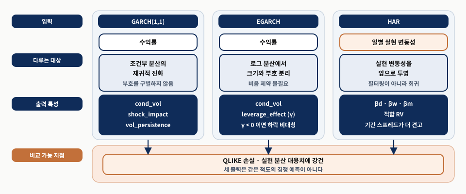
열 단위로 위에서 아래로 읽고, 입력 행과 출력 대상 행이 다르다는 점을 확인합니다.
잠재 분산이 관측되지 않으므로 실현 분산 대용치에 강건한 QLIKE를 씁니다(Patton, 2011). 예측 분산과 실현 분산 대용치가 같으면 0이고 어긋날수록 커집니다.
이 도해는 측정 결과가 아니라 역할 분담을 보이는 구조 도식입니다. 어느 열이 더 낫다는 비교가 아닙니다.
QLIKE에서 롤링 기준선을 못 이기는 적합 경로는 추가 복잡성을 정당화하지 못한 것입니다.
변동성 특성은 현재의 변동성 환경을 반영할 때만 유용합니다. 재적합 주기는 모수의 안정성과 모델의 비용에 맞춥니다.
| 모델 | 핵심 특성 | 재적합 주기 | 쓸 때의 조건 |
|---|---|---|---|
| ARIMA | arima_residual · arima_forecast | 워크포워드 창마다 차수 재탐색 | 유동 수익률에서는 예측보다 잔차가 유용 |
| GARCH(1,1) | cond_vol · shock_impact · vol_persistence · long_run_vol | 주간·월간, 사이에는 재귀로 매일 갱신 | 지속성 합이 1 이상이면 long_run_vol 무효 |
| EGARCH·GJR | leverage_effect | 주간·월간 | 단독 예측보다 조건화 변수 |
| HAR | 세 기간 계수 · 적합 RV | 롤링 일정, 입력은 매일 갱신 | 계수가 국면에 민감 |
| 확률적 변동성 | 사후 평균·표준편차·신용 구간 | 월간 이하, 사이에는 필터링 갱신 | 필터링 사후분포만 사용 |
| 허스트 지수 | H (거칠기) | 252일 창, 주간 갱신 | 느린 국면 서술자로만 |
흔한 운영 방식은 밤사이 유니버스 전체의 모수를 재추정하고 다음 거래일 동안 재귀 특성을 갱신하는 것입니다. 지수 평활 근사는 대체물이 될 수 있지만 고정된 장기 분산 복귀점이 없다는 차이가 있습니다.
GARCH는 무조건 분산으로 되돌아오는 앵커가 있고 EWMA는 없습니다. 급등 뒤 정상화 속도와 새 국면 지속 시 과소 반응이 이 차이에서 나옵니다.
GARCH와 HAR은 지속성을 잘 서술하지만 비교적 매끄러운 변동성 동학을 부과합니다. 거친 변동성은 다른 경험적 관찰에서 출발합니다.
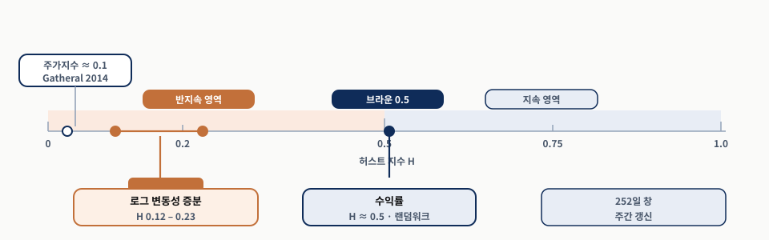
축 위의 세 눈금이 같은 종류의 계열이 아니라는 점을 먼저 확인합니다.
SPY 수익률은 0.5 근처로 랜덤워크와 일관되고, 로그 변동성 증분은 추정량에 따라 0.12에서 0.23 사이로 확실히 거친 영역에 있습니다. Gatheral et al. (2014)는 주가지수에서 0.1 근처를 기록했습니다.
추정치가 잡음이 커서 252일 창을 주간 갱신하는 편이 낫습니다. 큰 하루 변동은 대개 구조적 단절이 아니라 추정 잡음입니다.
추정치가 0.5보다 크게 낮아지면 표준 변동성 재귀는 변동성이 얼마나 급히 튀었다 가라앉을 수 있는지를 과소평가할 수 있습니다. 무효가 되는 것은 아니지만 해석이 달라집니다.
앞 절들은 적합 모델에서 값을 꺼냈습니다. 이 절은 같은 적합 객체에서 한 겹 더 꺼냅니다.
같은 20% 변동성 예측이라도 좁은 구간에 둘러싸인 경우와 넓은 구간에 둘러싸인 경우는 운용상 뜻이 다릅니다. 점추정만 남기면 두 경우가 구별되지 않습니다.
적합 모델이 값 하나가 아니라 분포를 내놓는 순간 사후 표준편차, 신용 구간 너비, 꼬리 확률, 예측 표준오차, 예측 구간 너비가 생깁니다.
| 종류 | 무엇에 대한 불확실성인가 | 특성으로 쓸 수 있는가 |
|---|---|---|
| 잠재 상태 | 지금 숨은 상태가 어디에 있는지 | 필터링 사후분포에서 뽑으면 가능 |
| 예측 | 상태를 완벽히 알아도 내일의 충격 때문에 남는 몫 | 가능. 예측 구간 너비·표준오차로 전달 |
| 모수 | 부정확한 모수 추정이 위 둘로 전파되는 몫 | 구간에 반영하되 별도 특성으로 쓸 때는 안정성 확인 |
현재 국면은 꽤 확신하면서 내일 실현 변동성은 매우 불확실할 수 있습니다. 두 번째와 첫 번째가 다른 대상이기 때문입니다. 실시간 경계는 필터링과 평활 사이에 있고, 9.2절 실습이 그 경계를 숫자로 보였습니다.
구간 너비는 척도 의존입니다. 너비 1%p는 예측 수준이 2%일 때와 20%일 때 뜻이 다르므로, 양의 타깃에는 같은 척도의 예측 수준으로 나눈 상대 불확실성이 더 이식성이 좋습니다.
다음 날 변동성 예측이 두 모델 모두 1.8%인 경우입니다. 90% 구간은 각각 1.6–2.0%와 1.0–2.6%입니다.
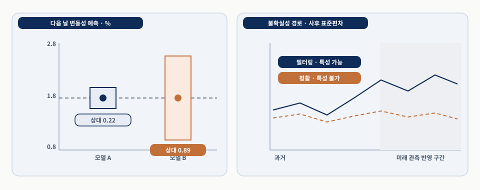
왼쪽에서 두 구간의 중심이 같다는 것을 확인하고 상대 너비 두 값을 비교합니다. 그다음 오른쪽에서 두 경로가 갈라지는 구간을 봅니다.
상대 너비 0.22와 0.89는 같은 중심에 대해 B가 훨씬 덜 믿을 만하다는 뜻입니다. 오른쪽에서 두 경로가 갈라지는 구간이 곧 미래 정보가 들어간 구간입니다.
분모가 0 근처에서 값이 튀지 않도록 작은 안정화 상수나 분모 하한을 더합니다. 90% 구간이 실현값을 60%만 덮으면 특성으로 쓰기 전에 보정부터 확인합니다.
좋은 불확실성 특성은 타깃·기간·척도·추출 규칙을 이름에 명시합니다. 단위는 연율 변동성 퍼센트포인트입니다.
확률적 변동성 모델(Taylor, 1982)은 변동성 자체를 고유한 충격항을 가지고 진화하는 잠재 과정으로 다룹니다. 따라서 추정은 경로 하나가 아니라 분포를 냅니다.
변동성이 낮고 잘 식별된 경우, 높고 잘 식별된 경우, 높지만 잘 식별되지 않은 경우입니다. 두 달 모두 사후 평균이 연율 20%인데 90% 신용 구간이 19–21%와 14–27%라면, 사후 평균만 남기면 두 달이 같아 보입니다.
미지 대상은 세 모수에 잠재 경로 전체가 더해진 고차원 객체라 사후분포의 평균·분위수를 닫힌 형태로 얻지 못합니다. 그래서 MCMC나 변분 추론을 씁니다. 변분 추론은 훨씬 빠르지만 불확실성을 과소평가할 수 있어 불확실성 자체가 특성일 때는 바꿔 쓰기 어렵습니다.
트레이스 그림에서 연쇄가 서로 다른 영역에 갇히지 않아야 하고, 유효 표본 수가 아주 작지 않아야 하며, R̂이 1에 가깝고 사후 예측 점검에 뚜렷한 불일치가 없어야 합니다. 잘 섞이지 않은 연쇄는 거짓 확신도 거짓 모호함도 만들어 냅니다.
사후 표준편차가 크다는 것은 모델이 높은 위험을 감지했을 뿐 아니라 그 위험 상태가 어디에 있는지도 덜 확신한다는 뜻입니다. 높은 변동성만으로 얻는 경고보다 강할 수 있습니다.
ARIMA는 적합값과 잔차 이상을 냅니다. 변동성형 계열에서는 수익률에 직접 적용하는 것보다 보조 계열에 쓰는 편이 유용한 경우가 많습니다.
로그 변환은 척도를 안정시키고 역변환 뒤 음의 예측이 나오는 것을 막습니다. 또 원래 척도의 예측 구간을 비대칭으로 만드는데, 하방은 0 근처에 묶여 있고 상방 급등은 클 수 있는 변동성에는 이쪽이 더 현실적입니다.
예측 표준오차는 모델링한 척도(로그)에서의 불확실성, 예측 구간 너비는 원래 척도에서의 불확실성, 상대 불확실성은 구간 너비를 같은 척도의 예측 수준으로 나눈 값입니다. 상대 불확실성이 높으면 점예측이 커 보여도 모델의 예측이 약하게 식별된 것입니다.
차수 선택, 구간 추정, 재적합은 모두 워크포워드 안에 머물러야 합니다. 불확실성 특성은 불확실성 자체가 선견 편향 없이 측정됐을 때만 유용합니다.
많은 금융 계열은 안정된 분포 하나 주위에서 오르내린다기보다 반복되는 시장 환경 사이를 오간다고 서술하는 편이 낫습니다.
9.1절의 구조적 단절은 자료 생성 과정의 불연속적 변화를 표시하고, 국면 모델은 계열이 이전 상태를 다시 방문할 수 있다고 가정합니다.
가장 단순한 국면 특성은 관측 데이터에 적용한 결정론적 규칙입니다. VIX 임계값, 긴 이동평균 대비 가격, 초피니스 지수나 추세 효율성 측도가 그 예입니다.
투명하고, 잠재 상태 추정이 필요 없고, 운용에서 감사하기 쉽습니다. VIX가 특정 유니버스나 기간에서 정보성을 잃으면 그 실패는 진단하기 쉽습니다. 더 유연한 잠재 상태 모델은 풍부한 동학을 표현하지만 가정과 실패 양상도 더 많이 들여옵니다.
예측이 아니라 시장 맥락입니다. 변동성 임계값은 그 자체로 수익률을 예측하지 않고, 다른 특성을 평온한 환경에서 해석해야 할지 스트레스 환경에서 해석해야 할지를 다운스트림 모델에 알려 줍니다.
실무에서 이 조건화 역할이 국면 특성 전반의 가장 중요한 기능인 경우가 많습니다. 정교한 모델을 더하더라도 기준선 특성으로 남습니다.
HMM은 관측되지 않는 상태 변수가 마르코프 연쇄를 따른다고 가정합니다(Rabiner, 1989). 전이·방출 수치는 원서가 보고한 값입니다.
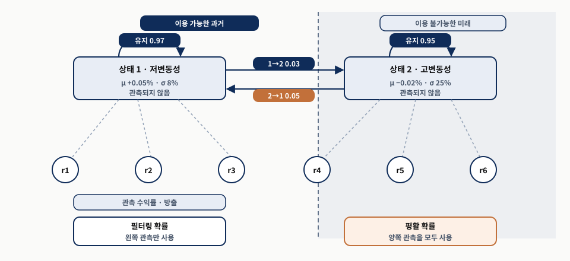
위층에서 두 상태의 자기 고리 확률을 먼저 읽고, 아래층으로 내려오는 점선이 방출임을 확인한 뒤, 마지막으로 세로 경계선을 봅니다.
“기억이 없다”는 것은 지속성이 없다는 뜻이 아니라 현재 상태가 과거를 충분히 요약한다는 뜻입니다. 큰 대각 원소가 바로 지속성입니다.
경계선 오른쪽 관측을 쓰는 순간 특성이 아니라 회고 분석이 됩니다. 방출 모수는 연율 표준편차와 일별 평균이며 서로 다른 단위입니다.
필터링 확률은 왼쪽만 쓰고 평활 확률은 양쪽을 씁니다. 9.2절 실습과 9.4절 사후 불확실성에서 본 것과 같은 경계입니다.
가장 중요한 출력은 시점까지 이용 가능한 정보만으로 계산한 필터링 상태 확률입니다. 평활 확률은 미래 관측을 쓰므로 회고 분석에만 적합합니다.
전이 행렬과 필터링 상태 벡터에서 한 걸음 예측을 만들고, 새 관측을 본 뒤 베이즈 규칙으로 상태별 방출 밀도를 곱해 정규화합니다. 평활 확률은 뒤로 가는 패스로 미래 정보를 더합니다.
상태별 필터링 확률, 다음 상태 예측 확률, 기대 지속 기간, 필터링 벡터의 엔트로피입니다. 앞 화면의 저변동성 상태라면 기대 지속 기간은 1/(1−0.97), 약 33기간입니다. 엔트로피는 한 상태가 지배하면 낮고 모델이 헷갈리면 높습니다.
상태에는 이름표가 없어 한 창의 “상태 0”이 다음 창의 “상태 1”일 수 있으므로 분산 같은 안정된 특징으로 재레이블링합니다. 상태 수는 강한 이유가 없으면 적게 유지합니다. 두 상태 명세가 해석이 쉽고 표본 밖에서 더 안정적인 경우가 많습니다.
필터링 확률은 불확실성을 보존하므로 하드 상태 레이블보다 대개 유용합니다. 다음 두 화면이 그 이유를 구체적으로 보입니다.
HMM 같은 모멘트 기반 모델은 평균과 분산으로 상태를 구별합니다. 주된 차이가 왜도나 꼬리 행동에 있으면 놓칠 수 있습니다.
| 접근 | 국면을 가르는 것 | 주요 출력 | 주의 |
|---|---|---|---|
| 관측 가능한 규칙 | VIX 임계값, 이동평균 대비 가격, 추세 효율성 | 이진 또는 범주형 시장 맥락 | 예측이 아니라 맥락 |
| HMM | 상태별 방출 분포(평균·분산) | 필터링 확률, 전이 행렬, 기대 지속 기간, 엔트로피 | 레이블 전환, 상태 수 |
| MS-AR | 국면별 자기회귀 계수 | 국면별 지속성·분산 | 변동성만 다르면 HMM으로 충분 |
| 분포 기반 군집 | 왜도·꼬리 같은 분포 형태(바서슈타인 거리) | 군집 레이블, 중심까지 거리, 모멘트 기반과의 불일치 | 합성 벤치마크 ARI 0.87 대 0.31은 국면 구조가 분포 형태에 있을 때의 결과 |
바서슈타인 거리는 한 분포를 다른 분포로 바꾸는 비용이고, 1차원에서는 분위수 함수 사이의 거리로 읽을 수 있습니다. 조정 랜드 지수는 군집 결과와 참 레이블의 일치도로 1이 완전 일치, 0이 무작위 수준입니다.
0.87 대 0.31은 국면 구조가 애초에 분포 형태에 있도록 만든 합성 벤치마크 결과입니다. 실제 시장에서 같은 격차를 기대하는 근거로 쓸 수 없습니다.
두 상태 설정에서 필터링 스트레스 확률이 월 0.08, 화 0.22, 수 0.47, 목 0.74로 진화하는 경로입니다.
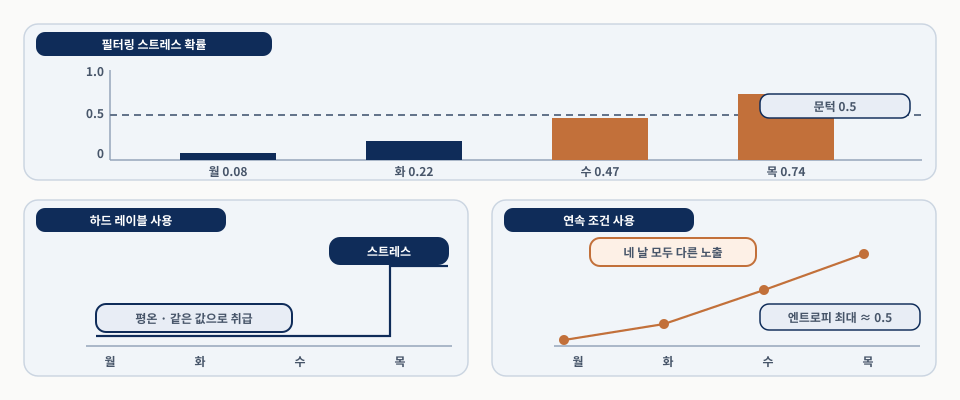
위 칸의 네 막대를 아래 두 경로와 세로로 맞춰 읽습니다.
하드 경로는 수요일의 0.47과 월요일의 0.08을 같은 값으로 취급합니다. 전환 근처에서 확률의 작은 변화가 활성 예측기의 큰 변화로 이어지므로 하드 스위칭은 불안정해집니다.
확률과 엔트로피를 전달하면 모델이 국면 불확실성에 따라 반응을 달리하도록 학습하거나 설계할 수 있지만, 실제로 비중을 줄이는지는 모델과 운용 규칙에 달려 있습니다.
원서는 경계에서 부드럽게 성능이 낮아진다고 적습니다. 확률을 입력해도 뒤에 임계값으로 자르는 규칙이 있으면 출력은 불연속일 수 있습니다.
연율 25%의 조건부 변동성 추정치는 유틸리티 주식과 바이오테크 주식에서 뜻이 다릅니다. 칼만 추세·국면 확률·스펙트럼 에너지도 마찬가지입니다.
시간 특성은 먼저 각 계열의 자기 역사에서 자산별로 계산됩니다. 다중 자산 설정에서는 횡단면 맥락에 놓거나 관련 자산과 결합할 때 더 유용해집니다.
각 날짜에 자산별로 이미 확정된 시간 특성을 가져와 원시 값을 적격 유니버스 대비 순위·백분위·z-점수로 바꿉니다.
| 변환 | 남기는 정보 | 강점 | 약점 |
|---|---|---|---|
| 순위 | 순서만 | 이상치에 강건, 이질적 자산 간 비교 가능 | 거리 정보 소실 |
| z-점수 | 유니버스 평균 대비 거리 | 분산이 중요할 때 정보 보존 | 이상치에 민감 |
| 백분위 | 순위를 0–1의 유계 척도로 | 유계, 해석 용이 | 원자료 값 사이의 거리 정보 소실 |
원시 칼만 추세는 유니버스 상대 모멘텀이 되고, 조건부 변동성은 변동성 백분위가 되며, 국면 확률은 그 자산이 동종 집단보다 더 스트레스 상태인지의 측도가 됩니다.
시간 모델이 여전히 일차 추출을 맡습니다. 횡단면 변환은 신호를 처음부터 만들지 않고 이미 의미 있는 수량을 다중 자산 판단에 맞게 다시 표현합니다.
석유 섹터 ETF는 주식시장 전체가 오르고 있다는 이유만으로 강한 절대 모멘텀을 보일 수 있습니다.
자산 모멘텀에서 시장이나 섹터 모멘텀을 빼면 고유 성분이 분리됩니다. 조건부 변동성을 시장 변동성으로 나누면 자산 고유 위험과 시장 전체 스트레스가 구별됩니다. 유니버스 평균 스트레스 확률에서 자산의 스트레스 확률을 빼면 상대적 방어성이 나오며, 이때 양수가 방어적이라는 뜻입니다.
공적분은 “높은 상관 + 평균회귀”가 아니라 두 비정상 계열의 선형 결합이 정상이라는 진술입니다. 같은 시장 이유로 오르는 두 주식은 수준 상관이 1에 가깝지만 둘의 차이는 한없이 방황할 수 있습니다. 칼만 헤지 비율로 만든 스프레드에서 z-점수와 반감기가 나옵니다.
오차수정 표현에서 장기 관계로부터의 편차가 미래 변화에 들어가기 때문입니다. 다만 추정 헤지 비율은 시간 불변이 아니고, 통계적으로 정상인 스프레드도 회귀가 느리거나 비용이 커서 운용상 무의미할 수 있습니다.
이 수량들은 거래 규칙이 아니라 상태 요약으로 해석합니다. 짧은 반감기가 그 자체로 거래를 정당화하지 않습니다.
자산 수준 시간 특성이 있으면 유니버스 전체에 걸쳐 집계해 시장 전반의 조건을 요약할 수 있습니다.
| 집계 | 계산 | 읽는 법 |
|---|---|---|
| 유니버스 평균 | 자산별 조건부 변동성이나 스트레스 확률의 횡단면 평균 | 전체 변동성 상태, 압력이 광범위한지 |
| 분산 | 자산별 값의 횡단면 산포 | 자산들이 비슷하게 움직이는지 뚜렷이 갈리는지 |
| 폭 | 스트레스 확률이 높은 자산의 비율 | 얼마나 많은 자산이 동시에 스트레스인지 |
| 이탈 | 자산 값에서 유니버스 평균을 뺀 것 | 시장 국면과 함께 움직이는지 반대로 움직이는지 |
이탈은 양수가 평균 대비 초과 스트레스를 뜻하므로 앞 화면의 상대적 방어성과 부호가 반대입니다. 두 특성을 같은 패널에 둘 때 방향을 함께 적어야 합니다.
분산이 높으면 유니버스 안에 의견 차이가 있다는 뜻이고 로테이션·분절·선택적 위험 감수와 함께 나타나는 경우가 많습니다. 이 조합이 단일 자산 레이블보다 정보성이 큽니다.
먼저 각 자산의 시간 특성을 자기 후행 역사에서 계산하고, 그 출력을 의사결정일에 정렬한 뒤, 그다음에야 횡단면을 구성합니다.
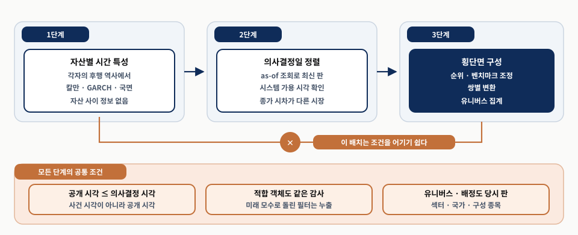
왼쪽에서 오른쪽으로 읽고, 아래쪽 조건 칸을 단계별로 함께 봅니다.
모든 사실에 사건 시각·공개 시각·의사결정 시각을 붙이고, 허용 규칙은 공개 시각이 의사결정 시각보다 앞선다는 한 줄입니다. 운용에서는 값이 파이프라인에 실제로 도착한 시스템 가용 시각이 결정적일 수 있습니다.
역방향 차단 표시는 그 배치가 금지라는 뜻이 아니라 그 배치에서 가용성 조건을 어기기 쉽다는 뜻입니다.
이익수익률 예가 규칙을 수치로 보입니다. 4월 15일에 알려진 주당순이익이 4.00이고 주가가 50이면 올바른 값은 8.0%이며, 5월에 공시된 4.40을 쓴 8.8%는 오답입니다.
교재 저장소의 장 가이드 노트북이 함께 기록한 데이터 진단입니다. 성과 실험이 아니라 배치 확인용 고정 표본입니다.
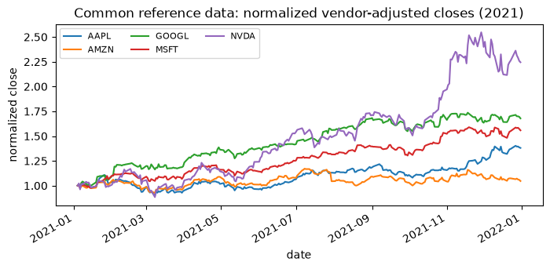
축과 기간을 먼저 확인하고 종목 수를 셉니다.
출처는 AlgoSeek 번들 S&P 500 일별 바, 기간은 2021-01-04부터 2021-12-31까지, 5개 종목·252거래일·총 1,260행입니다.
같은 실행이 결측 가격 0개, 0 이하 가격 0개, 중복 종목·날짜 0개, 최대 절대 일별 수익률 0.120423을 기록했습니다.
5종목 2021년 고정 표본의 교육용 자료입니다. 장의 본 실험은 공식 소스와 사례 연구의 동일한 데이터 경계·비용 계약에서 다시 수행합니다.
대표 실험의 목적은 수익률을 높이는 것이 아니라 필터·스펙트럼·변동성·국면 모델의 출력을 시점 기준 특성으로 바꾸는 방법을 검사 가능한 형태로 만드는 것입니다.
demo = run_demo(BOOK_ROOT, SPEC)
display(demo.table.round(6)) # 네 열의 기술통계
display(pd.Series(demo.checks, name="passed").to_frame()) # 자동 검사 결과
display(demo.figure)
print(demo.note)demo.table은 수익률과 세 개의 지연 상태 특성을 한 표로 만들고, demo.checks는 그 배치를 실행 중에 검사합니다. 핵심 검사는 상태 계열이 관측 계열보다 늦게 시작하는지입니다. 상태는 의사결정 시점 이전의 값만 씁니다.
다음 화면에서 네 열의 기술통계와 두 자동 검사 결과를 봅니다. 숫자의 크기보다 열 이름과 시작 시점이 요점입니다.
앞 화면과 같은 데이터·기간입니다. 두 자동 검사는 state_starts_later와 finite이고 둘 다 통과했습니다.
| 열 | 평균 | 표준편차 | 최소 | 최대 |
|---|---|---|---|---|
| return | 0.001849 | 0.014135 | −0.041126 | 0.040604 |
| state_t_minus_1 | 0.002306 | 0.002699 | −0.005150 | 0.009344 |
| residual | −0.000458 | 0.014553 | −0.041477 | 0.045755 |
| vol_state_t_minus_1 | 0.015390 | 0.005346 | 0.008445 | 0.046346 |
state_t_minus_1의 표준편차 0.002699가 return의 0.014135보다 훨씬 작은 것은 상태가 평활된 수량이기 때문이고, vol_state_t_minus_1이 모두 양수인 것은 변동성 상태의 정의상 그렇습니다.
이 표는 성과가 아니라 배치를 확인하는 표입니다. 2021년 5종목 고정 표본의 관측 한 번이며 범위나 우위를 추정해 덧붙일 근거가 아닙니다.
앞 표와 같은 실행이 함께 남긴 그림입니다. 축 단위는 일별 수익률과 같은 척도의 상태값입니다.
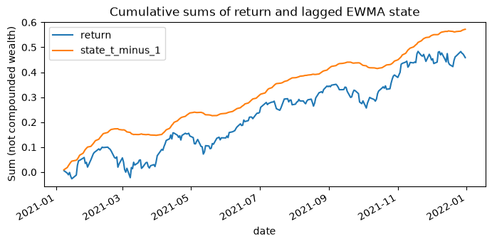
두 계열의 시작점을 먼저 비교합니다.
상태 계열이 늦게 시작하는 만큼이 워밍업 구간입니다. 그 구간을 앞으로 채우면 아직 존재하지 않았던 상태를 과거에 배치하는 것이 됩니다.
같은 노트북은 정규화의 경계도 기록했습니다. 기준 창이 상수이면 min-max 분모가 0이 되고, 새 값 40.0에서 min-max 기준은 1.5, 경험 백분위는 1.0입니다. 백분위는 유계라 1에서 포화하고 min-max는 범위를 벗어난 값을 그대로 키웁니다.
전체 표본으로 HMM이나 스펙트럼을 맞춘 뒤 과거에 배치하면 미래 정보가 역류합니다. 정규화는 정상성의 증명이 아닙니다.
이 장은 특성 공학을 직접 변환에서 적합 절차가 만드는 특성으로 확장했습니다.
남은 질문은 하나입니다. 이 방법들이 만들 수 있는 특성을 모두 넣을 것인가, 집합을 해석 가능하고 비중복으로 유지할 것인가.
절별로 보태진 것을 되짚으면 진단은 안정성과 단절 위험의 롤링 측도, 신호 변환은 잠재 상태·주파수·스케일·경로 기하, 변동성 모델은 조건부 분산과 지속성·비대칭·기간별 성분, 불확실성 모델은 구간 너비와 사후 산포, 국면 모델은 임계값·필터링 확률·지속 기간·분포 기반 군집입니다.
변동성 특성 하나나 둘, 국면 특성 하나, 신호 변환 특성 하나, 제한된 횡단면 변환 몇 개면 적합 방법이 무엇을 더하는지 확인하기에 보통 충분합니다.
거기서부터 특성 선택이 추가 구조가 모델을 개선하는지 복잡성만 늘리는지를 결정합니다. 중복된 계열을 모두 넣으면 어느 것이 기여했는지 판정할 수 없습니다.
10장은 같은 적합 객체 규율을 텍스트 특성에 적용합니다. 거기서는 타이밍, 감쇠, 임베딩 모델 의존성이 핵심 제약 조건이 됩니다.
도구가 일곱 절에 걸쳐 달라졌지만 게이트는 하나였습니다. 의사결정 시점에 실제로 존재했던 정보만으로 만들었는가입니다.
각 질문은 앞에서 본 표와 그림에 근거가 있습니다. 답을 설명할 때 그 화면을 다시 확인합니다.
어떤 스프레드에서 롤링 ADF 통계량이 몇 주에 걸쳐 0 쪽으로 올라오고 롤링 KPSS 통계량도 함께 오르고 있습니다. 이 두 경로가 말하는 것은 무엇이고 말하지 않는 것은 무엇입니까? 특성으로 넣을 때 “정상 대 비정상” 레이블 대신 무엇을 넣어야 할까요?
동료가 32–64일 세부 대역의 계수를 그대로 실시간 특성으로 배포하려 합니다. 왜 가장 최근 계수가 특히 위험한지, 그리고 같은 질문을 안전하게 묻는 후행 대리값은 어떤 형태인지 설명해 보세요.
두 날짜에 확률적 변동성 모델의 사후 평균이 모두 연율 20%입니다. 두 날짜를 구별하는 특성은 무엇이고, 그 특성을 필터링 사후분포에서 뽑아야 하는 이유는 무엇이며, 국면 확률에서 같은 규칙이 어떻게 반복됩니까?
세 질문 모두 같은 구조입니다. 출력이 무엇을 측정했는지, 그 출력이 의사결정 시점에 존재했는지, 그리고 레이블로 압축하면 무엇이 사라지는지입니다.
같은 적합 객체에서 나온 두 출력 가운데 하나는 특성이고 하나는 회고 분석인 경우가 반복해서 나타났습니다.
적합 절차는 과거를 예측 타깃과 관련된 방향으로 더 효과적으로 요약합니다. 칼만 필터 하나가 수준·기울기·혁신·상태 불확실성을 내고, GARCH 하나가 조건부 변동성과 지속성 모수를 함께 내며, 국면 모델 하나가 확률·지속 기간·엔트로피를 냅니다.
필터의 과거 출력은 미래 변경에 0만큼 반응했고 평활은 0.063287만큼 반응했습니다. 회고적 단절일과 온라인 경보는 다른 시각이고, 지속성 합이 1에 닿으면 장기 분산은 해석할 수 없으며, 하드 레이블은 확률이 0.5 근처일 때 가장 많은 정보를 버립니다.
지금 쓰는 특성 가운데 적합 절차의 출력은 무엇이고, 그 절차의 모수·차수·창 길이를 언제 어떤 데이터로 골랐습니까? 특성 이름만 보고 필터링인지 평활인지 구별할 수 있습니까?